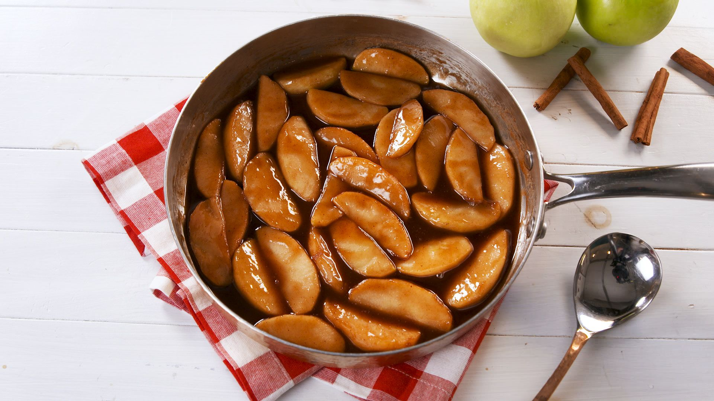

Fried Apples

Description
Fried apples are a great side, or dessert, and are sure to please. This recipe is also sure to please you with its easy steps and quick prep.
Serve with any southern dish to impress and look forward to all the compliments you will recieve.
Ingredients
- 1/2 cup of butter
- 1/2 cup of sugar
- 2 tbsp cinnamon
- 4 peeled and cored Granny Smiths
Steps
- Melt butter in a skillet on medium heat
- Add sugar and cinnamon and stir until sugar dissolves
- Add in apples and cook for 5-8 minutes until softened